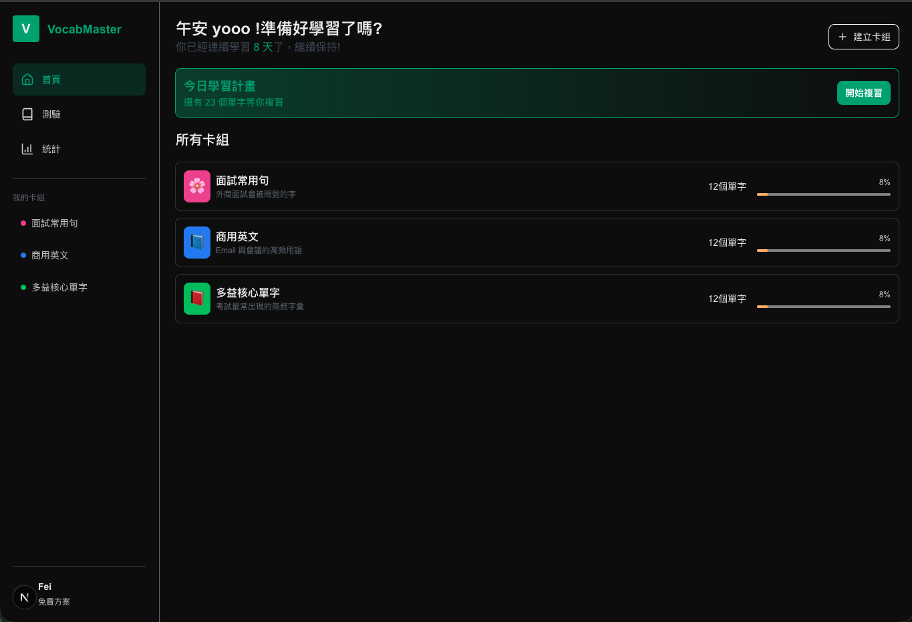
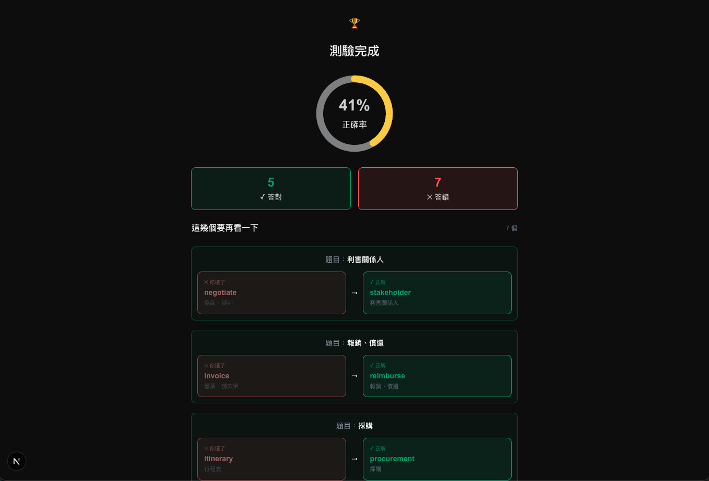
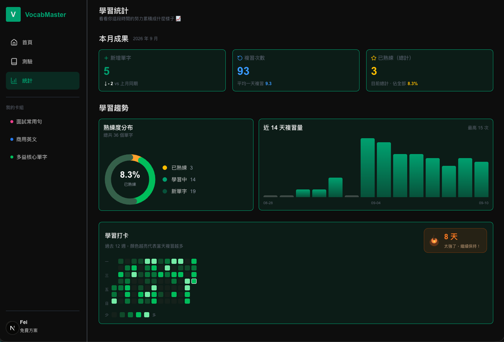
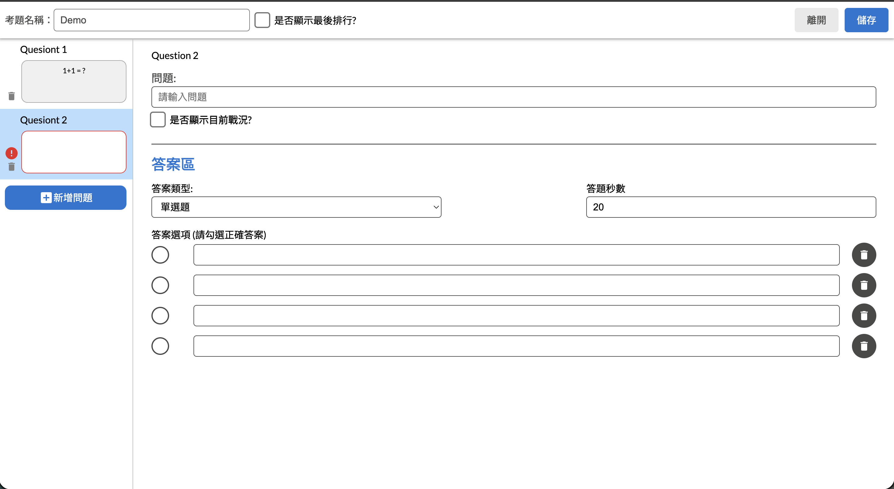
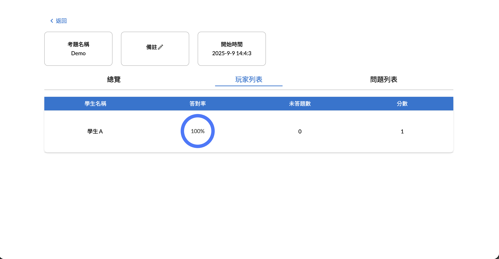
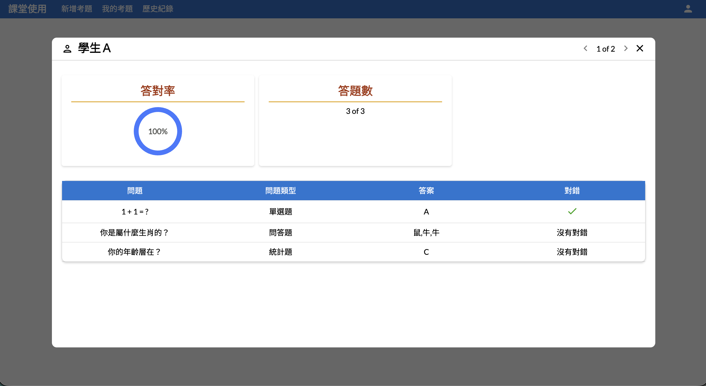

07/14
學習頁 UI 與 Prisma 破冰
翻卡動畫、「認識／不認識」流程、成果統計頁。同週完成 schema 設計與資料庫串接，把假資料全面換掉。
Frontend Engineer
喜歡把設計稿完美呈現的前端工程師。
Vue.js 三年、React 一年半。習慣動手前先把畫面想清楚——包含各種空狀態、 錯誤狀態和手機版，再開始寫程式。做決定時會把「為什麼」和「代價」一起寫下來， 包括後來被自己推翻的那些。
個性認真負責、好溝通。平常喜歡運動，主要打羽球。
主要
框架與工具
後端與部署
個人專案 · 2026/07 – 09 · 單人開發
用間隔重複幫助記憶的背單字 App。從零規劃、開發到部署上線， 重點在「怎麼做決定」而不只是「做了什麼功能」。
兩個月，從規劃到上線。
間隔重複的排程演算法是核心，其餘功能都圍繞它。
| 模組 | 做了什麼 | 技術重點 |
|---|---|---|
| 複習排程 | 六階段間隔重複（1／2／4／7／15／30 天），翻卡作答後即時更新 | Server Action + $transaction + 指數退避重試 |
| 測驗 | 選擇題與拼字兩種模式、干擾選項自動生成、錯題檢討 | 干擾選項去重與降級策略、URL 即狀態 |
| 學習統計 | 本月成果、熟練度分布、近 14 天趨勢、12 週打卡熱力圖、連續天數 | 手刻 SVG 圖表、時間區間查詢、gap filling |
| 卡組管理 | 建立卡組、批次新增單字、單字列表含搜尋與篩選 | 巢狀 create、compound component、樂觀更新 |
包含中途停擺三週、重新排程，以及上線前砍掉的功能。
學習頁 UI 與 Prisma 破冰
翻卡動畫、「認識／不認識」流程、成果統計頁。同週完成 schema 設計與資料庫串接，把假資料全面換掉。
複習結果寫回資料庫關鍵轉折
這週之後 App 才「真的能用」。把間隔常數抽成共用模組，修掉一個因為魔術數字造成的階數 off-by-one。
首頁接上真實資料
今日待複習數量、跨卡組複習。同時決定不做「正確率」——當時沒有存作答歷史，硬做只會是假數字。
停擺三週
現實生活因素中斷。重啟時沒有假裝進度還在，而是重新盤點剩餘工作、把原訂三週壓縮成兩週衝刺，並明確列出要砍掉的功能。
推翻自己的資料庫設計決策反轉
為了做統計頁，發現七月決定的「不留複習歷史」讓打卡日曆根本做不出來。新增歷史表，並在文件中保留原決定與推翻理由。
測驗頁完成
兩種測驗模式與錯題檢討頁。過程中修掉數個 React 常見陷阱：元件 key 造成的狀態殘留、事件處理中的 stale closure，以及一個會讓伺服器卡死的無限迴圈。
統計頁與資料層
先寫 seed 腳本產生 12 週的假歷史資料——沒有歷史資料，熱力圖和趨勢圖等於在沒有輸出的情況下開發。
四張圖表全部手刻 SVG，並抽出可重用的 count-up hook 與時間區間工具。
手機版 RWD
先畫七支手機版設計稿再動手改。側邊欄改成底部導覽列、修掉多處會爆版的固定寬度，並建立語意化斷點讓三個導覽元件永遠同步切換。
部署上線Shipped
SQLite 遷移到 PostgreSQL、Vercel 部署。過程踩到三個只在正式環境才會出現的問題，都記錄在下方。
每個決定都連同「為什麼」與「代價」寫進專案文件，包括後來被推翻的。
從「不留歷史」到「留下每一筆」
最初決定只存「可排程的狀態」，不留每次複習的歷史，理由是保持 schema 精簡。
做統計頁時才發現打卡日曆與趨勢圖做不出來——最後複習時間每次都被覆蓋，昨天的紀錄永遠救不回來。 曾考慮改用一個計數欄位，但那是「帳戶餘額」，你沒辦法從餘額反推出每一天存了多少錢。
明細可以推導出總計，總計推導不回明細。資料粒度一旦丟掉就回不來。
兩條刻意不對稱的排程規則
只有到期時答對才會進階——否則使用者可以在一個下午重複刷同一個字十次，系統就會以為他熟練了。
答錯一律退階，不管有沒有到期——「忘記」是客觀事實，跟排程無關。
兩條規則的不對稱來自這個功能真正的目的：長期記憶，不是短期分數。
刻意不做冪等鍵
複習時要同時更新排程與寫入歷史，用交易綁成原子操作，外層加上最多五次的指數退避重試。
重試可能造成重複寫入，標準解法是加一個唯一的 idempotency key。評估後決定不做： 重試發生在同一個 Server Action 內、機率極低，後果只是圖表某天多算一次。
但把「什麼情況下該做」寫進了文件：跨網路呼叫、後果不可逆、高併發。
移除一個已經畫好設計稿的功能
統計頁原本有時間篩選 Tab。但版面調整後，數字卡固定顯示本月、熟練度是當下快照、 長條圖是近 14 天、熱力圖是 12 週——每一塊都有自己天然的時間範圍，那組 Tab 已經沒有東西可以控制。
一個點了沒反應的控制項，比沒有那個控制項更糟——使用者會以為 App 壞了。
用數據回答「需不需要 partition」
擔心複習紀錄長大後查詢變慢，於是建了一張兩百萬筆的測試表實際量測，而不是憑感覺加索引或提早分區。
| 情況 | 執行計畫 | 查一個月 |
|---|---|---|
| 沒有索引 | SCAN（全表掃描） | 70 ms |
| 有索引 | SEARCH USING COVERING INDEX | < 1 ms |
結論是索引綽綽有餘，partition 解決的通常是維運問題而不是查詢速度。 並順手修正一個誤解：高基數不會讓索引變差，反而讓它更有效。
三個都只在正式環境出現，本機再怎麼測都不會遇到。
靜態預渲染讓資料凍結
部署前讀 production build 的路由表，發現首頁和統計頁被標成靜態——資料會凍結在建置那一刻。
根因是 Next.js 只認得 fetch()，看不懂 ORM，所以判定這兩頁沒有動態資料。
開發模式每次都重新渲染，永遠不會重現。
原生查詢引擎裝不進 serverless
Prisma 的查詢引擎是 Rust 編譯的原生二進位，每個平台一份。 本機是 macOS arm64、雲端是 Linux x64，建置成功但一開頁面就 500。
官方文件的兩個解法在這個組合下都沒生效。最後改用 driver adapter + client engine—— 純 TypeScript／WASM，根本沒有平台專屬的檔案要打包，從源頭消除問題。
時區：本機正確、上線後每天錯八小時
資料本身永遠正確（時間戳是絕對時刻），錯的是「換算成日曆」那一步。 UTC 伺服器上，台北凌晨 0 到 8 點的操作全部會被記到前一天——熱力圖點錯格、連續天數可能無故斷掉。
解法是在伺服器啟動時統一時區，讓伺服器與使用者用同一本日曆。
開發過程中同步維護，不是事後補的。
每日排程與里程碑。含中途停擺後的重新規劃，以及明確標示「這次砍掉了什麼」。
待辦與技術債。每一條都附上症狀、影響範圍與暫時解法，避免未來被誤刪。
700 行的通用原則整理。每條都附上當初踩到的實例——沒有事件的原則記不住。
20 份可互動的設計稿。桌機、手機、各種空狀態，動手前先確認長相。
深色主題，桌機與手機皆已適配。依使用流程排序：進入 → 複習 → 測驗 → 回顧。



已經排進 TODO 但還沒做的，誠實列出。
| 項目 | 為什麼還沒做 |
|---|---|
| 使用者系統（Auth） | 先用單一使用者跑通全部功能，避免過早引入權限複雜度 |
| Server Action 信任邊界盤點 | 需要使用者身分才做得完整，跟 Auth 同批處理 |
| 元件 API 重構（4 項） | 都要全站掃過呼叫端，集中處理比零散改有效率 |
| 多時區支援 | 目前使用者都在同一時區，等真的需要再做 |
個人專案 · 2022 · 單人開發 · 仍在使用中
給老師在課堂上出題、學生即時作答的互動工具。 概念類似 Kahoot，功能與介面全部自行構想設計。
它不是做完就放著的 demo。
做完四年，到現在還在被使用
這套系統目前仍在大學課堂實際使用中——由一位老師固定拿來做課堂問答。 從「做出來」到「持續被人依賴」是完全不同的兩件事：它必須夠穩定、 介面要讓不熟悉 3C 的老師也能自己操作，出問題時我得真的去修。
有真實使用者的專案，才會逼你面對「好不好用」而不只是「能不能動」。
從老師出題到學生作答、再到課後檢討的完整流程。
| 模組 | 做了什麼 |
|---|---|
| 加入課堂 | 老師開場投影 QR Code，學生掃碼、輸入暱稱就能加入——不必註冊帳號、不必手打網址 |
| 出題 | 一份考題可含多題，逐題設定題型、選項與正確答案，左側清單可快速切換與刪除 |
| 三種題型 | 單選題（有正解、計分）、問答題（自由文字作答）、統計題（無正解，用來蒐集意見） |
| 課堂控制 | 每題可設定作答秒數、是否即時顯示「目前戰況」、整份考題結束後是否顯示排行 |
| 即時回饋 | 倒數結束立刻跳出作答分布長條圖與「答對區／答錯區」分組；同一時間學生手機也收到自己的對錯結果 |
| 歷史紀錄 | 課後可從「總覽 / 玩家列表 / 問題列表」三種角度回查，也能點進單一學生看逐題明細 |
選 Firebase 是因為即時同步是這個產品的核心需求。
為什麼用 Firebase
課堂問答的核心是即時性——學生一按下答案，老師畫面的統計就要跟著跳。 自己架 WebSocket 伺服器要處理連線管理、重連、擴展； Firebase 的即時資料庫直接提供訂閱機制，加上 Auth 和 Hosting 是同一套， 對單人開發的專案來說是把力氣花在功能而不是基礎設施上。
介面全部自己設計
沒有設計稿也沒有 UI 框架的現成版型，從資訊架構到每個按鈕的位置都自己決定。 出題頁採「左側題目清單 + 右側編輯區」的雙欄結構， 讓老師在多題之間切換時不會迷失位置；未填寫的題目在清單上直接標紅， 送出前就知道哪裡還沒完成。
使用情境也影響了設計：上課只有短短幾分鐘，任何一個多餘步驟都會讓流程卡住。 所以學生端不做註冊、不打網址，掃 QR Code 輸入暱稱就開始； 成績檢討則反過來，允許從「總覽 / 玩家 / 問題」三個角度切入，因為那是課後慢慢看的。
同一套資料，課堂上要最快，課後要最完整——介面該長什麼樣，是使用情境決定的。
依課堂實際流程排序：出題 → 即時作答 → 課後檢討。



這個專案跟現在的我，中間差了什麼。
| 2022 · 上課問答系統 | 2026 · VocabMaster | |
|---|---|---|
| 做法 | 想到什麼做什麼，邊做邊調整 | 先排程、先畫設計稿、決策寫進文件 |
| 資料設計 | 依畫面需要決定結構 | 先想清楚要回答什麼問題，再決定存什麼 |
| 取捨 | 想到的功能都做 | 會刻意砍功能，並寫下為什麼 |
| 驗證 | 畫面看起來對就好 | 用實測數據判斷（如兩百萬筆的查詢量測） |